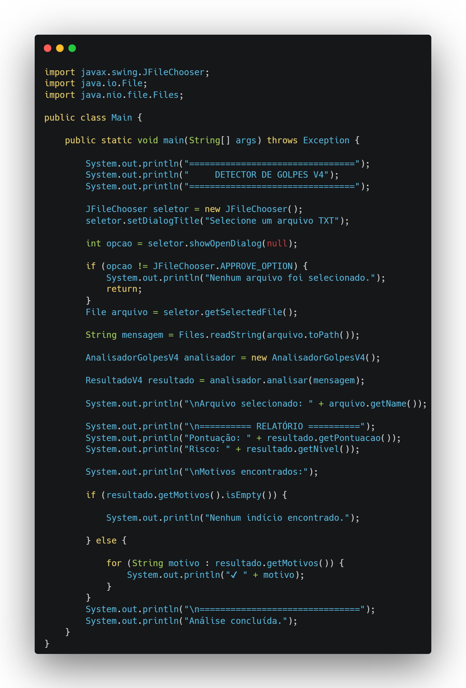
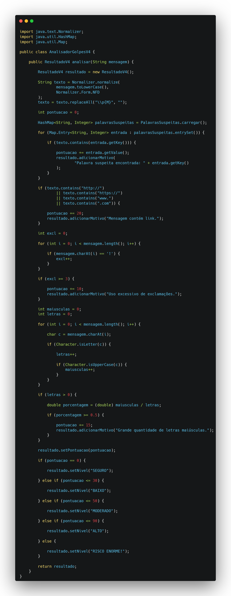
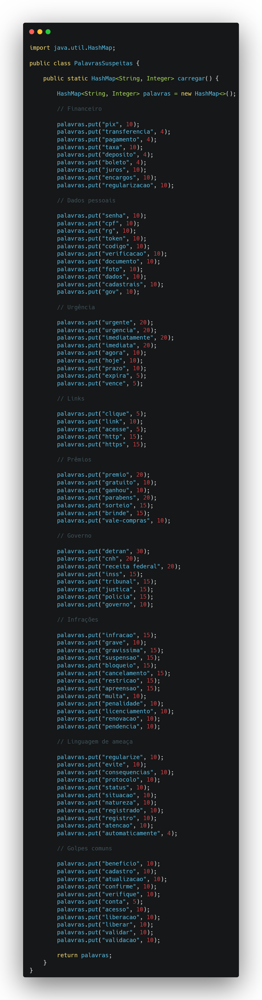
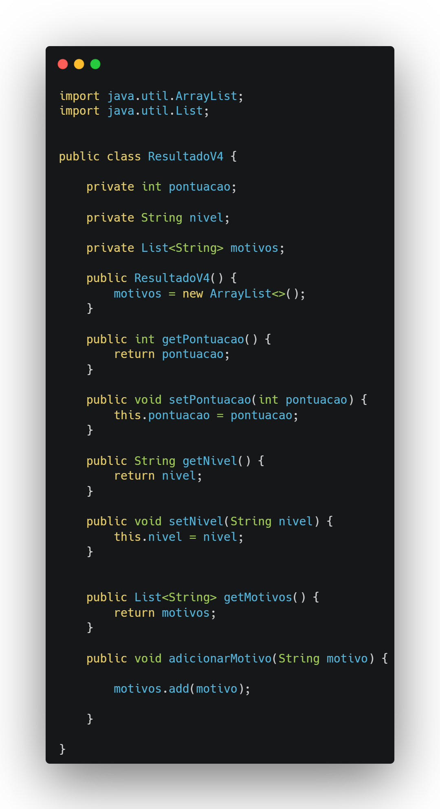

Meus Projetos
AQUI ESTÃO ALGUNS PROJETOS QUE DESENVOLVI:
DETECTOR DE GOLPES:
O Detector de Golpes é um projeto desenvolvido em Java com o objetivo de identificar possíveis mensagens fraudulentas por meio da análise de diferentes padrões de texto.
O sistema permite selecionar um arquivo .txt e analisar automaticamente seu conteúdo. Durante a análise, são identificados diversos indícios comuns em golpes digitais, como pedidos de dados pessoais, cobranças suspeitas, mensagens de urgência, links, premiações falsas, ameaças de bloqueio e solicitações relacionadas a pagamentos.
Cada indicador possui uma pontuação de risco específica. Ao final da análise, o sistema calcula uma pontuação total e classifica a mensagem em diferentes níveis de risco, além de apresentar os motivos encontrados.
Principais funcionalidades:
- Seleção de arquivos .txt para análise.
- Normalização do texto, incluindo remoção de acentos e conversão para letras minúsculas
- Identificação de palavras e expressões suspeitas.
- Sistema de pontuação baseado no nível de risco de cada indicador.
- Detecção de links e URLs.
- Identificação de uso excessivo de letras maiúsculas.
- Identificação de excesso de exclamações.
- Classificação da mensagem em níveis de risco.
- Geração de um relatório com os motivos encontrados.
Tecnologias utilizadas:
- Java
- Java Swing — seleção de arquivos.
- Java NIO — leitura dos arquivos.
- Collections Framework — armazenamento das palavras suspeitas.
- String/Regex — processamento e normalização de textos.
- Programação Orientada a Objetos (POO).
Estrutura do projeto:
O projeto foi dividido em classes com responsabilidades diferentes:
Main

Responsável pela:
- interação inicial com o usuário;
- seleção do arquivo;
- apresentação do resultado.
AnalisadorGolpes

Responsável por:
- Realizar a análise das mensagens;
- Identificar padrões suspeitos;
- Calcular a pontuação de risco;
- Classificar o nível de ameaça com
base nos indicadores encontrados.
PalavrasSuspeitas

Responsável por:
- Armazenar e organizar as palavras e expressões suspeitas;
- Atribuir diferentes pesos de risco para cada indicador utilizado pelo sistema.
Resultado

Responsável por:
- Armazenar e organizar os resultados da análise;
- Incluir a pontuação de risco, o nível de ameaça e os motivos identificados pelo sistema.